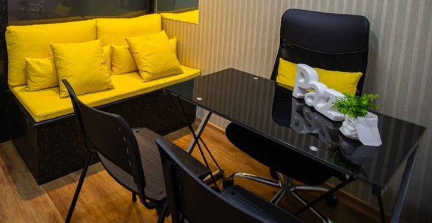

Início · Psicoterapia · Casal e família
Casal e família: quando a conversa em casa travou.
“Terapia de casal” aparece como abordagem no perfil do Marcos, e “terapia familiar” como experiência — além da especialização em casais e família que ele declara. Informação geral; cada processo é individual.
A dois
Terapia de casal
Na terapia de casal, as duas pessoas vêm juntas às sessões. O foco não é decidir quem tem razão, e sim entender o que se repete na relação: as brigas que voltam, os silêncios, os desencontros de desejo e de projeto.
O psicólogo não toma partido. A escuta é para os dois — e para a relação.

Em família
Terapia familiar
Na terapia familiar, mais de uma pessoa da família participa. É um espaço para que todos possam falar e ser ouvidos, especialmente em momentos de mudança: uma separação, uma perda, a chegada ou a saída de alguém de casa.
Mudanças
Separação, mudança de casa, novos arranjos familiares.
Perdas
Luto e fases difíceis vividas em conjunto.
Convivência
Conflitos que se repetem entre gerações.
Decisões
Escolhas que afetam todos.
Sinais
Quando buscar
- As conversas viram discussão, ou deixaram de acontecer.
- Uma crise de confiança ou uma decisão difícil.
- A dúvida sobre continuar ou não a relação.
- Mudanças na família que pesam sobre todos.
Às vezes só uma pessoa se sente pronta. Ela pode começar em psicoterapia individual e conversar com o Marcos sobre o formato mais adequado.
Sessões
Como são as sessões
- ContatoUma das pessoas agenda pelo WhatsApp (71) 99259-8121.
- Primeiro encontroCada um conta como vê a situação.
- CombinadosFrequência, duração e, se for o caso, sessões individuais.
- ProcessoNo ritmo do casal ou da família, sem prazo prometido.
Ética
Sigilo a dois
O sigilo profissional também vale na terapia de casal e de família: o que é dito no consultório fica no consultório. A forma de lidar com conversas individuais é combinada com todos no início.
Dúvidas frequentes
Perguntas comuns
A terapia de casal serve para salvar o relacionamento?
Ela não tem um resultado definido de antemão. Serve para que o casal compreenda o que vive e possa decidir com mais clareza.
E se o outro não quiser ir?
A pessoa pode começar sozinha, em psicoterapia individual, e conversar sobre isso nas sessões.
Casais de qualquer configuração?
A terapia de casal acolhe casais em suas diversas configurações, com respeito e sigilo.
Agende
Quando fizer sentido, comece por uma conversa.
Na sala 210 do Shopping Rio Vermelho, em Salvador. O agendamento é pelo WhatsApp (71) 99259-8121.